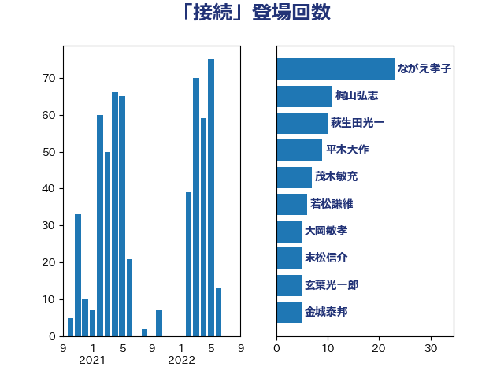

単語「接続」

| ながえ孝子 | 無所属 | 23 回 |
| 梶山弘志 | 自由民主党 | 11 回 |
| 萩生田光一 | 自由民主党 | 10 回 |
| 平木大作 | 公明党 | 9 回 |
| 茂木敏充 | 自由民主党 | 7 回 |
| 若松謙維 | 公明党 | 6 回 |
| 大岡敏孝 | 自由民主党 | 5 回 |
| 末松信介 | 自由民主党 | 5 回 |
| 玄葉光一郎 | 立憲民主党 | 5 回 |
| 金城泰邦 | 公明党 | 5 回 |
| 中西祐介 | 自由民主党 | 4 回 |
| 伊藤孝恵 | 国民民主党 | 4 回 |
| 堀井巌 | 自由民主党 | 4 回 |
| 岸信夫 | 自由民主党 | 4 回 |
| 柳ヶ瀬裕文 | 日本維新の会 | 4 回 |
| 池田佳隆 | 自由民主党 | 4 回 |
| 片山さつき | 自由民主党 | 4 回 |
| 田村憲久 | 自由民主党 | 4 回 |
| 田村貴昭 | 日本共産党 | 4 回 |
| 高木かおり | 日本維新の会 | 4 回 |
| 三浦信祐 | 公明党 | 3 回 |
| 中曽根康隆 | 自由民主党 | 3 回 |
| 佐藤英道 | 公明党 | 3 回 |
| 吉田宣弘 | 公明党 | 3 回 |
| 城井崇 | 立憲民主党 | 3 回 |
| 大口善徳 | 公明党 | 3 回 |
| 宮本岳志 | 日本共産党 | 3 回 |
| 平井卓也 | 自由民主党 | 3 回 |
| 掘井健智 | 日本維新の会 | 3 回 |
| 斉藤鉄夫 | 公明党 | 3 回 |
| 石原正敬 | 自由民主党 | 3 回 |
| 秋野公造 | 公明党 | 3 回 |
| 自見はなこ | 自由民主党 | 3 回 |
| 菅義偉 | 自由民主党 | 3 回 |
| 豊田俊郎 | 自由民主党 | 3 回 |
| 赤羽一嘉 | 公明党 | 3 回 |
| 道下大樹 | 立憲民主党 | 3 回 |
| 鈴木義弘 | 国民民主党 | 3 回 |
| 阿部司 | 日本維新の会 | 3 回 |
| 伊藤岳 | 日本共産党 | 2 回 |
| 北村経夫 | 自由民主党 | 2 回 |
| 古賀友一郎 | 自由民主党 | 2 回 |
| 吉川沙織 | 立憲民主党 | 2 回 |
| 吉良よし子 | 日本共産党 | 2 回 |
| 国定勇人 | 自由民主党 | 2 回 |
| 堀場幸子 | 日本維新の会 | 2 回 |
| 大島敦 | 立憲民主党 | 2 回 |
| 小宮山泰子 | 立憲民主党 | 2 回 |
| 小川淳也 | 立憲民主党 | 2 回 |
| 岡本あき子 | 立憲民主党 | 2 回 |
| 徳永久志 | 立憲民主党 | 2 回 |
| 杉本和巳 | 日本維新の会 | 2 回 |
| 森田俊和 | 立憲民主党 | 2 回 |
| 河野太郎 | 自由民主党 | 2 回 |
| 河野義博 | 公明党 | 2 回 |
| 浅田均 | 日本維新の会 | 2 回 |
| 浅野哲 | 国民民主党 | 2 回 |
| 浦野靖人 | 日本維新の会 | 2 回 |
| 福山哲郎 | 立憲民主党 | 2 回 |
| 藤原崇 | 自由民主党 | 2 回 |
| 藤川政人 | 自由民主党 | 2 回 |
| 輿水恵一 | 公明党 | 2 回 |
| 野上浩太郎 | 自由民主党 | 2 回 |
| 鈴木敦 | 国民民主党 | 2 回 |
| 長坂康正 | 自由民主党 | 2 回 |
| 三浦靖 | 自由民主党 | 1 回 |
| 上田清司 | 国民民主党 | 1 回 |
| 上野通子 | 自由民主党 | 1 回 |
| 下村博文 | 自由民主党 | 1 回 |
| 世耕弘成 | 自由民主党 | 1 回 |
| 中川正春 | 立憲民主党 | 1 回 |
| 中川郁子 | 自由民主党 | 1 回 |
| 井上信治 | 自由民主党 | 1 回 |
| 井上哲士 | 日本共産党 | 1 回 |
| 井坂信彦 | 立憲民主党 | 1 回 |
| 仁木博文 | 無所属 | 1 回 |
| 前原誠司 | 国民民主党 | 1 回 |
| 加藤勝信 | 自由民主党 | 1 回 |
| 勝部賢志 | 立憲民主党 | 1 回 |
| 古川元久 | 国民民主党 | 1 回 |
| 國場幸之助 | 自由民主党 | 1 回 |
| 土田慎 | 自由民主党 | 1 回 |
| 堂故茂 | 自由民主党 | 1 回 |
| 塩川鉄也 | 日本共産党 | 1 回 |
| 大野泰正 | 自由民主党 | 1 回 |
| 安江伸夫 | 公明党 | 1 回 |
| 宮口治子 | 立憲民主党 | 1 回 |
| 宮路拓馬 | 自由民主党 | 1 回 |
| 寺田静 | 無所属 | 1 回 |
| 小沢雅仁 | 立憲民主党 | 1 回 |
| 小田原潔 | 自由民主党 | 1 回 |
| 山崎誠 | 立憲民主党 | 1 回 |
| 岸田文雄 | 自由民主党 | 1 回 |
| 岸真紀子 | 立憲民主党 | 1 回 |
| 後藤茂之 | 自由民主党 | 1 回 |
| 斎藤洋明 | 自由民主党 | 1 回 |
| 木村次郎 | 自由民主党 | 1 回 |
| 杉久武 | 公明党 | 1 回 |
| 杉田水脈 | 自由民主党 | 1 回 |
| 松川るい | 自由民主党 | 1 回 |
| 枝野幸男 | 立憲民主党 | 1 回 |
| 根本匠 | 自由民主党 | 1 回 |
| 横山信一 | 公明党 | 1 回 |
| 櫻井周 | 立憲民主党 | 1 回 |
| 武田良太 | 自由民主党 | 1 回 |
| 武部新 | 自由民主党 | 1 回 |
| 比嘉奈津美 | 自由民主党 | 1 回 |
| 沢田良 | 日本維新の会 | 1 回 |
| 河西宏一 | 公明党 | 1 回 |
| 泉健太 | 立憲民主党 | 1 回 |
| 浜田聡 | NHK党 | 1 回 |
| 浜野喜史 | 国民民主党 | 1 回 |
| 浮島智子 | 公明党 | 1 回 |
| 清水真人 | 自由民主党 | 1 回 |
| 渡辺周 | 立憲民主党 | 1 回 |
| 渡辺猛之 | 自由民主党 | 1 回 |
| 滝沢求 | 自由民主党 | 1 回 |
| 玉木雄一郎 | 国民民主党 | 1 回 |
| 甘利明 | 自由民主党 | 1 回 |
| 田島麻衣子 | 立憲民主党 | 1 回 |
| 田村まみ | 国民民主党 | 1 回 |
| 矢倉克夫 | 公明党 | 1 回 |
| 石井啓一 | 公明党 | 1 回 |
| 石井章 | 日本維新の会 | 1 回 |
| 秋葉賢也 | 自由民主党 | 1 回 |
| 篠原豪 | 立憲民主党 | 1 回 |
| 簗和生 | 自由民主党 | 1 回 |
| 舩後靖彦 | れいわ新選組 | 1 回 |
| 芳賀道也 | 国民民主党 | 1 回 |
| 荒井優 | 立憲民主党 | 1 回 |
| 藤井比早之 | 自由民主党 | 1 回 |
| 西村智奈美 | 立憲民主党 | 1 回 |
| 西田昌司 | 自由民主党 | 1 回 |
| 西銘恒三郎 | 自由民主党 | 1 回 |
| 谷田川元 | 立憲民主党 | 1 回 |
| 赤澤亮正 | 自由民主党 | 1 回 |
| 野田国義 | 立憲民主党 | 1 回 |
| 野田聖子 | 自由民主党 | 1 回 |
| 長妻昭 | 立憲民主党 | 1 回 |
| 額賀福志郎 | 自由民主党 | 1 回 |
| 高木啓 | 自由民主党 | 1 回 |
| 鬼木誠 | 立憲民主党 | 1 回 |
| 鰐淵洋子 | 公明党 | 1 回 |
| 鷲尾英一郎 | 自由民主党 | 1 回 |
| 麻生太郎 | 自由民主党 | 1 回 |